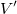
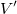
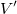
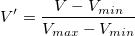
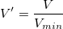
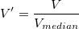

はユーザー定義値であると仮定すると、正規化されたデータは次のように計算できます。
はユーザー定義値であると仮定すると、正規化されたデータは次のように計算できます。
解析：数学：列の正規化
列を右クリックして規格化を選択
XYデータの範囲を標準化します
必要なOriginのバージョン: 8.1 SR0以降
1. rnormalize irng:=2:4 method:=min;
2. rnormalize irng:=Col(B) method:=specify val:=7 orng:=<new>;
3. rnormalize irng:=2:4 method:=ref type:=max refcol:=5 orng:=<new>;
4. rnormalize irng:=2:4 method:=cell cell:=1[10] orng:=<new>;
スクリプトからXファンクションにアクセスする場合、追加のオプションスイッチについてのページを参照してください。
| 表示 名 |
変数 名 |
I/O と データ型 |
デフォルト 値 |
説明 |
|---|---|---|---|---|
| 入力 | irng |
入力 Range |
|
入力列または範囲を指定します。Origin 2020b以降、[Book]Sheet!(N1:N2) 形式の短縮構文を使用できます。ここで、N1は列の連続した範囲の開始の列番号、N2は終了の列番号です。[Book]Sheet!([Book]Sheet!N1:N2,[Book]Sheet!N3:N4) の形式の非連続データも使用できます。 |
| 合計データ情報 | datainfo |
入力 ツリーノード |
|
これはダイアログにファイル情報を表示するためのものです。LabTalkでXファンクションを使うとき、この変数は使用しないで下さい。 |
| 入力データを1つの複合データセットとして扱う | composite |
入力 int |
|
選択を一つの複合データセットとして扱うかどうかを指定します。この変数は、方法が特定値で割るまたは参照セルで割るにセットされている場合のみ利用できます。 |
| グループ | group |
入力 int |
|
列（複数可）をグループ情報として指定し、それぞれの一意のグループで正規化を実行します。 |
| 正規化の方法 | method |
入力 int |
|
正規化に使用する手法
オプションリスト:
|
| ユーザ定義の値 | val |
入力 double |
|
この変数は、方法が特定値で割るにセットされている場合のみ利用できます。入力データを割るのに使用する値を指定します。 |
| 参照列 | refcol |
入力 列 |
|
この変数は、方法が参照列を使うにセットされている場合のみ利用できます。 |
| 正規化ターゲット | type |
入力 int |
|
この変数は、方法が参照列を使うにセットされている場合のみ利用できます。参照列のどの統計変数を正規化に使用するかを決定します。正規化後、入力列の選択された統計変数は、参照列の統計変数と一致します。
オプションリスト:
|
| 参照セル | cell |
入力 Range |
|
この変数は、方法が参照セル値で割るにセットされている場合のみ利用できます。入力データを割るのに使用する単一セル値を指定します。 |
| v1 | v1 |
入力 double |
|
この変数は、方法が[v1, v2]に正規化にセットされている場合(method:=customrange)のみ利用できます。値v1～v2の範囲に対する最小値を指定します。 |
| v2 | v2 |
入力 double |
|
この変数は、方法が[v1, v2]に正規化にセットされている場合(method:=customrange)のみ利用できます。 値v1～v2の範囲に対する最大値を指定します。 |
| 出力 | orng |
出力 範囲 |
|
正規化した列の出力を指定します。
このシンタックスを参照してください。 |
この関数は列または列の一部を指定した「標準」レベルに調整します。各選択した列を独立に扱い、すべての列を1つずつ正規化します。
次のスクリプトは、3番目のデータセットに従って2つのデータセットを正規化するサンプルです。
string fn$=system.path.program$ + "\Samples\Curve Fitting\Exponential Decay.dat "; impASC fname:=fn$; rnormalize irng:=3:4 method:=ref refcol:=2 orng:=<new>;
Vは入力データのV値であり、はユーザー定義値であると仮定すると、正規化されたデータは次のように計算できます。
特定値で割る:

[0, 1]に正規化:

[0, 100]に正規化:
[v1, v2]に正規化:
Zスコア(N(0, 1)で標準化):
最大値で割る:
最小値で割る:

平均で割る:

中央値で割る:

標準偏差で割る:

ノルムで割る:
 はn番目の値です。
はn番目の値です。
最頻値で割る:

合計で割る: